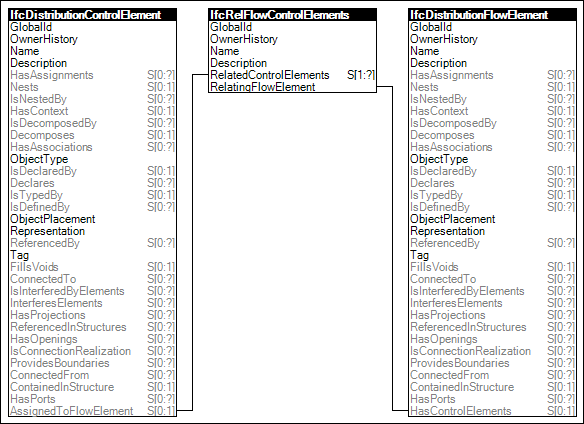

Link to this page
Link to this pageControl elements (such as sensors) that monitor or control behavior of flow elements (such as valves) use this relationship to indicate control flow logical behavior.
Figure 84 illustrates an instance diagram.
 |
Figure 84 — Control Flow |